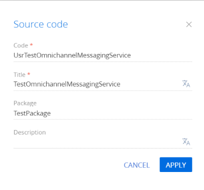
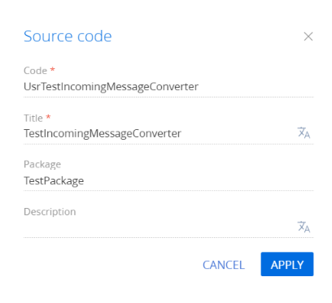
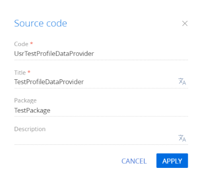
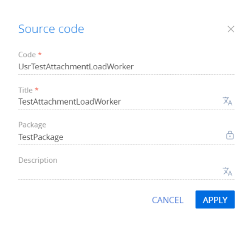
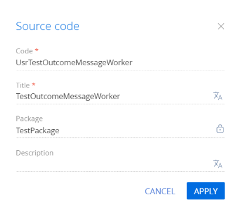
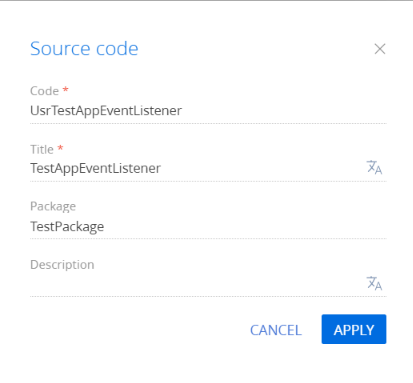

1. Добавить новый провайдер в Creatio
- Перейдите в дизайнер системы по кнопке
 .
. - В блоке Настройка системы (System setup) перейдите по ссылке Справочники (Lookups).
- Используя фильтр в верхней части страницы, найдите справочник Провайдер канала (Channel provider).
- Откройте наполнение справочника и добавьте значение Test.
2. Реализовать хранение данных нового канала
В базе данных приложения создайте таблицу [TestMsgSettings] (имя таблицы следует формировать по правилу [<ИмяПровайдера>MsgSettings]).
Структура таблицы зависит от конкретного мессенджера и должна содержать данные, необходимые системе для выполнения отправки и приема сообщений. Как правило мессенджеры для отправки используют авторизационный токен.
3. Зарегистрировать новый канал в базе данных
Для регистрации нового канала добавьте запись в таблицу [Channel].
| [Name] | Название канала. |
|---|---|
| [ProviderId] | Идентификатор добавленного провайдера. |
| [MsgSettingsId] | Идентификатор записи в таблице [TestMsgSettings]. |
| [Source] | Идентификатор канала внутри мессенджера, например идентификатор страницы на Facebook или идентификатор клиента в Telegram. Позволяет по сообщению от мессенджера определить получателя. |
4. Создать веб-сервис для приема сообщений
В примере реализуем вариант, при котором мессенджер присылает входящие сообщения на указанный endpoint. Созданный веб-сервис должен быть анонимным и доступным извне. Наследовать веб-сервис следует от базового веб-сервиса OmnichannelMessagingService, поскольку он содержит набор методов, позволяющих сохранить сообщение, создать чат, контакт и т. д.
Чтобы создать веб-сервис:
- Перейдите в раздел Конфигурация (Configuration) и выберите пользовательский пакет, в который будет добавлена схема.
-
На панели инструментов реестра раздела нажмите Добавить —> Исходный код (Add —> Source code).
/scr_add_schema.png)
-
В дизайнере схем заполните свойства схемы:
- Код (Code) — "UsrTestOmnichannelMessagingService".
- Заголовок (Title) — "TestOmnichannelMessagingService".

Для применения заданных свойств нажмите Применить (Apply).
-
В дизайнере схем добавьте исходный код.
TestOmnichannelMessagingServiceВ примере мессенджер присылает входящее сообщение на endpoint receive.
В методе ReceiveMessage выполняется:
- Конвертация сообщения (метод Convert класса TestIncomingMessageConverter, который будет создан на следующем шаге).
- Идентификация канала по полю Source (метод GetChannelAndQueueBySource).
-
Вызов метода InternalReceive, который выполнит следующие действия:
- Создаст новый чат, если открытый чат с этим клиентом не будет найден, или добавит сообщение к существующему.
- Создаст контакт, если это первое общение с клиентом, и выполнит заполнение его контактных данных, или привяжет чат к существующему контакту.
-
Сохраните и опубликуйте схему.
5. Реализовать конвертацию входящего сообщения в универсальный формат Creatio
После приема сообщения от мессенджера необходимо выполнить конвертацию входящего сообщения в универсальный формат Creatio (класс MessagingMessage). В примере эта задача выполняется классом TestIncomingMessageConverter, который конвертирует входящее сообщение с типом TestIncomingMessage (сообщение в формате мессенджера) в формат Creatio.
Чтобы создать класс-конвертер:
- Перейдите в раздел Конфигурация (Configuration) и выберите пользовательский пакет, в который будет добавлена схема.
- На панели инструментов реестра раздела нажмите Добавить —> Исходный код (Add —> Source code).
-
В дизайнере схем заполните свойства схемы:
- Код (Code) — "UsrTestIncomingMessageConverter".
- Заголовок (Title) — "TestIncomingMessageConverter".

Для применения заданных свойств нажмите Применить (Apply).
-
В дизайнере схем добавьте исходный код.
TestIncomingMessageConverterБлок Attachments заполняется в зависимости от формата доступа к файлам, который предоставляет мессенджер. В примере это ссылка для загрузки. Возможен вариант с передачей в сообщении FileId для последующего скачивания файла.
-
Сохраните и опубликуйте схему.
6. Реализовать получение данных профиля пользователя
Мессенджеры предоставляют API для получения данных клиентов, которые отправляют сообщения. Чтобы получить эти данные необходимо создать класс, реализующий интерфейс IProfileDataProvider.
Чтобы создать класс для получения данных профиля пользователя:
- Перейдите в раздел Конфигурация (Configuration) и выберите пользовательский пакет, в который будет добавлена схема.
- На панели инструментов реестра раздела нажмите Добавить —> Исходный код (Add —> Source code).
-
В дизайнере схем заполните свойства схемы:
- Код (Code) — "UsrTestProfileDataProvider".
- Заголовок (Title) — "TestProfileDataProvider".

Для применения заданных свойств нажмите Применить (Apply).
-
В дизайнере схем добавьте исходный код.
TestProfileDataProviderВ примере класс отправляет запрос на URL https://graph.test.com/ для получения данных в формате TestProfileData (предполагаемый формат мессенджера) и конвертирует полученный ответ во внутренний формат ProfileData. При создании контакта к нему будут добавлены полученные данные (например, имя, фамилия, фото). Если запрос не будет успешным или данные будут некорректными, то контакт будет создан с именем <Новый контакт><Имя канала>-<идентификатор клиента в мессенджере>.
- Сохраните и опубликуйте схему.
7. Реализовать загрузку вложений
Для загрузки вложений создайте класс, реализующий интерфейс IAttachmentsLoadWorker:
- Перейдите в раздел Конфигурация (Configuration) и выберите пользовательский пакет, в который будет добавлена схема.
- На панели инструментов реестра раздела нажмите Добавить —> Исходный код (Add —> Source code).
-
В дизайнере схем заполните свойства схемы:
- Код (Code) — "UsrTestAttachmentLoadWorker".
- Заголовок (Title) — "TestAttachmentLoadWorker".

Для применения заданных свойств нажмите Применить (Apply).
-
В дизайнере схем добавьте исходный код.
TestAttachmentLoadWorkerДля загрузки вложений используется внутренний класс AttachmentsDownloader, который выполняет загрузку и сохранение файла по ссылке. Сохранение файла происходит в таблицу [OmnichannelMessageFile].
- Сохраните и опубликуйте схему.
8. Реализовать отправку сообщений
Для отправки сообщений создайте класс, реализующий интерфейс IOutcomeMessageWorker:
- Перейдите в раздел Конфигурация (Configuration) и выберите пользовательский пакет, в который будет добавлена схема.
- На панели инструментов реестра раздела нажмите Добавить —> Исходный код (Add —> Source code).
-
В дизайнере схем заполните свойства схемы:
- Код (Code) — "UsrTestOutcomeMessageWorker".
- Заголовок (Title) — "TestOutcomeMessageWorker".

Для применения заданных свойств нажмите Применить (Apply).
-
В дизайнере схем добавьте исходный код.
TestOutcomeMessageWorkerКласс TestOutcomeMessageWorker переводит сообщение в формат мессенджера и выполняет его отправку, используя API мессенджера. Для выполнения отправки может понадобится токен, который следует хранить в таблице [TestMsgSettings]. Доступ к таблице можно получить через переданный в конструкторе UserConnection. В примере выполняется отправка сообщения на URL https://graph.test.com/, используя внутренний класс HttpRequestSender.
- Сохраните и опубликуйте схему.
9. Выполнить связывание интерфейсов
Чтобы выполнить связывание интерфейсов создайте класс наследник AppEventListenerBase:
- Перейдите в раздел Конфигурация (Configuration) и выберите пользовательский пакет, в который будет добавлена схема.
- На панели инструментов реестра раздела нажмите Добавить —> Исходный код (Add —> Source code).
-
В дизайнере схем заполните свойства схемы:
- Код (Code) — "UsrTestAppEventListener".
- Заголовок (Title) — "TestAppEventListener".

Для применения заданных свойств нажмите Применить (Apply).
-
В дизайнере схем добавьте исходный код.
TestAppEventListenerСозданные классы связываются по тегу "Test". Этот же тег должен быть указан при конвертации сообщения (шаг 4) в поле ChannelName. Таким образом система определяет какие файлы необходимо использовать для получения данных профиля, загрузки вложений и отправки сообщений.
- Сохраните и опубликуйте схему.